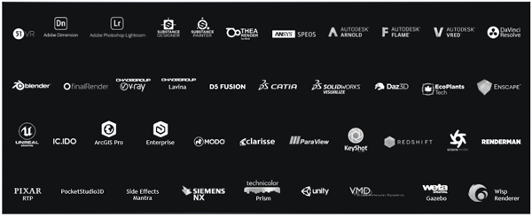
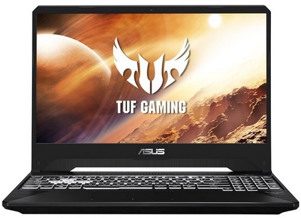
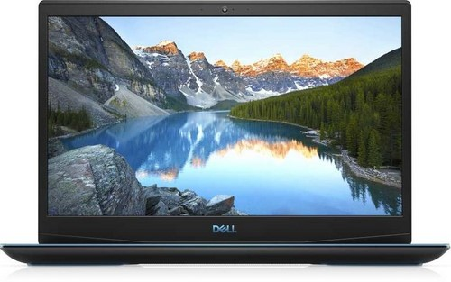
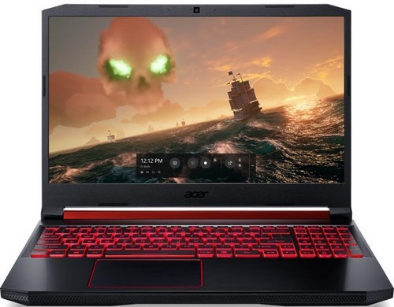
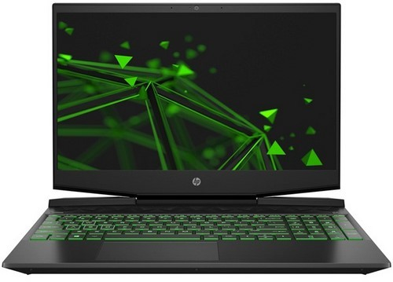
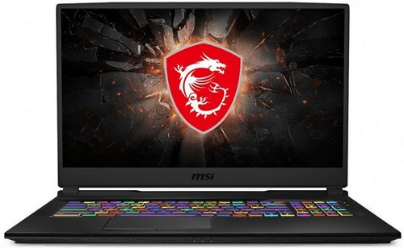
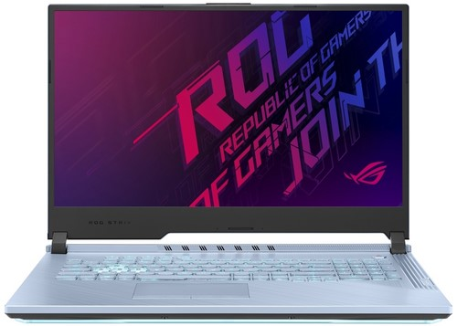
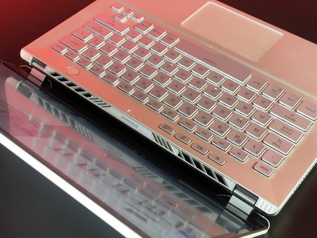

Разделы
Выбираем актуальный ноутбук 2020 г. для современных игр и работы
К игровым ноутбукам относятся по-разному. Они предлагают высокий уровень производительности, современные комплектующие, грамотную организацию системы охлаждения. И пользователю необходимо тщательно и взвешенно подойти к выбору подходящей модели и комплектации… Мы кратко расскажем о достижениях в развитии графических процессоров, их скорости и качестве работы, а также рассмотрим несколько моделей.
Оглавление
- Вступление
- Игровой ноутбук – не только для игр
- GeForce GTX или GeForce RTX?
- Варианты моделей с видеокартами NVIDIA GeForce GTX
- Варианты моделей с видеокартами NVIDIA GeForce RTX
- Заключение
Вступление
Пользователи относятся к игровым ноутбукам по-разному. Кто-то считает их хорошим вариантом для повседневного использования с запасом производительности, а кто-то воспринимает такие версии как попытку совместить несовместимое. Для некоторых это рабочий инструмент для сложных мультимедийных задач, вроде рендеринга видео. Есть и те, кто используют игровые модели по прямому назначению – для игр.
Раньше игровые ноутбуки были какой-то диковинкой и техникой для избранных из-за больших габаритов и внушительной массы. Говорить о практичности таких аппаратов не приходилось. Прогресс, новые техпроцессы и разработки позволили заметно уменьшить размеры компонентов и снизить тепловыделение. Последнее привело к уменьшению габаритов систем охлаждения и положительно сказалось на массе.
Каким бы ни был сценарий использования, игровые ноутбуки всегда подразумевают высокий уровень производительности, применение современных комплектующих, грамотную конструкцию системы охлаждения, а всё это ведет к росту стоимости. Да, такие модели бывают дешевле и дороже, но общее понятие игровой версии неизменно связано с высоким ценником. Такая ситуация стимулирует максимально тщательно и взвешенно подойти к выбору подходящей модели и комплектации.
Мы кратко расскажем о достижениях в развитии графических процессоров, их скорости и качестве работы. Это поможет пользователю точнее определиться с необходимым оснащением выбираемого ноутбука.
Почему графической производительности уделяется такое внимание? Всё просто. Современные игры или задачи рендеринга видео весьма требовательны к производительности видеокарты, а также объему и скорости ее памяти. Таким образом именно видеокарта становится наиболее значимым и ответственным компонентом. Хотя, безусловно, и вся остальная «начинка» должна быть соответствующей.
Игровой ноутбук – не только для игр
Повышение производительности и энергоэффективности графических адаптеров, появление новых типов ядер (RT, тензорные) и CUDA способствуют расширению сферы применения игровых ноутбуков. Теперь такие модели превратились в универсальные инструменты для игр, работы с графикой или проведения сложных вычислений.
В прошлом году из игровых ноутбуков даже выделилось отдельное семейство – ноутбуки для профессиональной работы с графикой, обработки фото и видеомонтажа. Компания NVIDIA сертифицирует такие модели с точки зрения используемых компонентов. Кроме того, была выпущена специальная драйверная программа STUDIO.
Они специально разработаны, чтобы обеспечить максимальную эффективность работы приложений для творчества. Например, внимание уделяется оптимизации работы таких приложений, как Adobe, Autodesk, Avid и многих других. Драйверы STUDIO отслеживают обновления таких приложений, кроме того, они тестируются на надежность и стабильность работы, особенно в условиях работы с конвейером из нескольких приложений.

Переключение между драйверами STUDIO и Game Ready доступно через интерфейс GeForce Experience. Благодаря этому можно расширить функциональность любого игрового ноутбука на графических процессорах GeForce последних поколений.
GeForce GTX или GeForce RTX?
Теперь рассмотрим непосредственно видеокарты – важнейшую аппаратную составляющую современных ноутбуков. Все актуальные модели компании NVIDIA делятся на серии GeForce GTX и GeForce RTX. И зависимости от версии обладают различным уровнем производительности и возможностей.
Актуальное поколение графики – это видеокарты, построенные на базе архитектуры Turing. 16-ая серия для карт GeForce GTX и 20-ая серия для карт GeForce RTX. Более ранние ускорители мы не рассматриваем как морально устаревшие. Графика RTX отличается от GTX наличием дополнительных ядер для ускорения рейтрейсинга и алгоритмов искусственного интеллекта. Ее мы рекомендуем всем, кто хочет максимума от графики в играх и запаса технологической прочности.
Наиболее доступная видеокарта NVIDIA GeForce GTX 1650 хорошо подойдет для игр с разрешением 1920 х 1080 пикселей и справится с высокими или средними графическими настройками в современных играх. И хотя речь идет о начальной модели, она построена на современной архитектуре Turing и совместима с драйверами NVIDIA STUDIO.
Более высокий уровень производительности обеспечивает видеокарта GeForce GTX 1660 Ti. Она обладает большим запасом памяти и хорошо подойдет для современных игр в разрешении Full HD при высоких настройках графики.
Серия GeForce RTX включает три модели: GeForce RTX 2060, GeForce RTX 2070 и GeForce RTX 2080. Начальная модель линейки успешно справится с современными играми и порадует пользователя поддержкой технологии трассировки световых лучей, но будет ограничена базовым уровнем их детализации.
В свою очередь модели GeForce RTX 2070 и GeForce RTX 2080 без проблем справятся с настройками трассировки световых лучей среднего уровня и позволят с комфортом играть на разрешении вплоть до 2560 х 1440 точек. Они хорошо подойдут и для работы с видеомонтажом или обработки фотографий. Их производительности хватит для работы с фильтрами на основе нейронных сетей и обработки видео в разрешении вплоть до формата 6К.
Столь серьезный шаг вперед в развитии графических процессоров наводит на мысль, что поиск игровой модели с солидным запасом на будущее необходимо осуществлять именно среди ноутбуков с видеокартами серии RTX.
Какие модели стоит рассмотреть для покупки в 2020 году? Мы изучим несколько вариантов моделей, отличающихся комплектацией и предлагаемых в различных ценовых сегментах. Их общая черта – ориентированность и позиционирование как игровые модели с солидной графической производительностью. Ноутбуки, оснащенные актуальными графическими адаптерами, способны обеспечить необходимый уровень производительности для современных задач, игровых и не только, и с некоторым запасом на будущее.
И начнем перечисление с наиболее доступной модели с постепенным увеличением стоимости.
Варианты моделей с видеокартами NVIDIA GeForce GTX
Самый доступный в нашем списке – ASUS TUF Gaming FX50 5DT-BQ135T. На момент написания статьи его розничная стоимость составляет около 60 тысяч рублей. Это версия с центральным процессором AMD Ryzen 5-3550H.
Хотя первые игровые модели на базе процессоров AMD были восприняты не слишком радужно, пользователи быстро оценили по достоинству прогресс в развитии процессоров компании. Так сложилось благодаря оптимальной стоимости и неплохой производительности, создающей солидную конкуренцию процессорам Intel. А когда речь идет о стремлении сэкономить, выбор производительного и не столь раскрученного процессора может оказаться наилучшим. Тем более, современные процессоры Ryzen построены на актуальном техпроцессе и обладают поддержкой многопоточности.

И если процессор AMD может вызвать у некоторых сомнения, то выбор графического адаптера найдет гораздо больше сторонников. Здесь используется видеокарта NVIDIA GeForce GTX1650 с 4 Гбайт собственной памяти. Хотя базовый объем оперативной памяти составляет 6 Гбайт, его можно расширить с помощью установки дополнительных модулей. Здесь используется оперативная память DDR4 с частотой 2400 МГц.
Для дисплея с разрешением Full HD предлагаемая конфигурация может считать оптимальной по соотношению стоимости и производительности. Да, говорить о запредельном количестве FPS в самых современных играх и с самыми высокими настройками графики не приходится. Тем не менее, данная модель ноутбука без проблем справится с современными играми и останется актуальной ближайшие несколько лет. Кстати, стремление компании ASUS к компактным ноутбукам принесло свои плоды – игровая модель весит всего 2.2 кг и без проблем сможет сопровождать владельца в поездках. В целом, основной слабой стороной модели можно выделить только объем оперативной памяти, которого может оказаться недостаточно в современных играх. Компенсировать этот фактор призвана сравнительно невысокая стоимость, а при необходимости – объем оперативной памяти можно увеличить самостоятельно.
Следующим в списке выступает Dell G3 3590 с ценником около 74 тысяч рублей. И здесь хочется начать рассказ сразу с дискретной видеокарты. Дело в том, что пользователю предлагается уже NVIDIA GeForce GTX 1660 Ti с 6 Гбайтами собственной памяти. Такое решение обладает заметно более высоким запасом быстродействия и откроет перед пользователем больше возможностей. Больше здесь и оперативной памяти – базовый объем составляет 8 Гбайт, что воспринимается уже как оптимальный минимум для современных задач. Выше здесь и частота работы памяти, она составляет 2666 МГц. А вот основное хранилище совпадает с предыдущим героем – 512 Гбайт.

В данном случае применяется уже проверенное решение среднего уровня – Intel Core i5-9300H. Это четырехъядерный процессор с базовой частотой 2,4 ГГц и пиковой до 4.1 ГГц в режиме TurboBoost. Такой процессор будет понятнее и интереснее для консервативных пользователей, предпочитающих проверенные решения Intel. Сам ноутбук немного тяжелее, да и габариты больше предыдущего ноутбука. Хотя назвать различия критичными нельзя и вряд ли пользователь будет ориентироваться на них при выборе, а вот более высокая производительность заинтересует. Правда, нужно учесть и необходимость доплатить.
Предположим, бюджет на покупку позволяет обратить внимание на модели около 80 тысяч рублей. Хочется получить максимум из доступного и хорошим вариантом может оказаться Acer AN515-54-72GJ. В сравнении с предыдущими вариантами отличия обнаруживаются практически во всём. Так, это первый ноутбук в нашем рейтинге, выполненный на базе центрального процессора Intel Core i7-9750H. Безусловно, он сможет обеспечить более высокий уровень производительности, но без нюансов не обошлось.

А именно, разработчики установили здесь видеокарту NVIDIA GeForce GTX1650 с 4 Гбайт собственной памяти. Получается, данная модель сконфигурирована со ставкой на производительность процессора. Не поскупились и на объем оперативной памяти, оснастив стандартную модификацию 16 Гбайт. Применяется память DDR4 с частотой 2666 МГц. А вот объем SSD накопителя типичен – 512 Гбайт. В целом, производительности такой конфигурации будет достаточно для любых современных игр в разрешении FullHD. Эта модель может хорошо подойти пользователям, которые используют игровой ноутбук как рабочую станцию с высоким уровнем производительности.
Ноутбуки компании Hewlet-Packard традиционно отличаются достаточно высокими ценниками, что не мешает им успешно продаваться и развиваться. Помимо базовых моделей и профессиональных ультрабуков, присутствуют у данного подразделения и модели с игровой направленностью. Сегодня мы обратили внимание на HP Pavilion Gaming 15-dk0069ur. Стоимость рассматриваемой модификации составляет около 110 тысяч рублей. Из названия можно безошибочно определить позиционирование модели, а также определить диагональ дисплея – стандартные 15,6 дюйма. Разрешение Full HD также является стандартом для современных ноутбуков такого класса.

По сравнению с предыдущими моделями здесь шаг вперед наблюдается "по всем фронтам". Так, основой конфигурации выступил процессор Intel Core i7-9750H с шестью ядрами и максимальной тактовой частотой до 4,5 ГГц. Оперативная память DDR4 на 2666 МГц обладает объемом 16 Гбайт и может быть увеличена вдвое.
А что по части видеокарты? Обеспечить весьма солидный запас производительности поможет NVIDIA GeForce GTX1660Ti. Она обладает 6 Гбайт собственной памяти и это первый ноутбук в нашем рейтинге, комплектующийся видеокартой в дизайне Max-Q. Иначе здесь решен и вопрос с хранилищем данных. В качестве системного диска выступает SSD накопитель на 256 Гбайт, а для хранения массива данных предусмотрен классический жесткий диск на 1 Тбайт. Конечно, за более высокий уровень производительности нужно доплатить, но это вполне оправдано и разумно в рамках поиска игровой модели с заделом на будущее.
При желании выбрать именно продукцию компании HP, но с ограничением в бюджете, можно посмотреть на модификацию этой модели, комплектующуюся процессором AMD Ryzen 5-3550H и видеокартой NVIDIA GeForce GTX1650. Объем оперативной памяти составит 8 Гбайт, а для хранения данных будет выделен только SSD на 256 Гбайт. Зато, такая модификация обойдется покупателю примерно в 55 тысяч рублей. Но не стоит слишком радоваться экономии, ведь в уровне производительности двух этих конфигураций будет весьма внушительная разница.
Варианты моделей с видеокартами NVIDIA GeForce RTX
В нашем рейтинге, самым доступным ноутбуком с видеокартой нового поколения оказался еще и самый крупный. Да, это модель с диагональю дисплея 17,3 дюйма. Правда по всем остальным параметрам дисплей остался вполне стандартным – разрешение FullHD и частота обновления 60 Гц. Речь идет о ноутбуке MSI GL75 9SEK-218RU. Его стоимость составляет примерно 130 тысяч рублей.

За эту сумму пользователю предлагают центральный процессор Intel Core i7-9750H, выполненный по 14 нм техпроцессу и располагающий шестью ядрами. Не поскупились также на объем оперативной памяти, предусмотрев 16 Гбайт DDR4 с частотой 2666 МГц. Кстати, этот объем можно увеличить до 64 Гбайт. Но попасть в наш рейтинг этому ноутбуку помогла именно дискретная видеокарта NVIDIA GeForce RTX2060, обладающая собственной видеопамятью GDDR6 в объеме 6 Гбайт. Среди семейства RTX это младшая модель, но она уже обладает достаточной производительностью для успешной работы с любыми современными играми и режима Ray Tracing. Трудно не согласиться, что поддержка новых технологий придется кстати для стремительно развивающихся компьютерных игр.
Стоит сказать пару слов и насчет основной памяти данной модели. Для установки операционной системы и хранения наиболее необходимых файлов предусмотрен SSD накопитель объемом 256 Гбайт, а в качестве хранилища файлов выступает классический жесткий диск на 1 Тбайт.
Поиск ноутбука с дисплеем 17,3 дюйма и желанием сэкономить, может привести к ROG Strix G GL731GT-H7192T. Дисплей располагает Full HD разрешением и частотой обновления 120 Гц.

Вычислительную мощность обеспечивает Intel Core i7-9750H, укомплектованный 16 Гбайт оперативной памяти, а вот обработку видео поручили дискретной видеокарте NVIDIA GeForce GTX 1650 с 4 Гбайт собственной памяти. Заплатить за данную конфигурацию придется около 95 тысяч рублей.
Особняком от полноразмерных игровых моделей стоит упомянуть ROG Zephyrus G14, который был представлен на презентации CES 2020, и в этом году поступит в свободную продажу. Точной информации об используемых центральных процессорах еще нет, но зато известно о применении дискретной графики NVIDIA GeForce RTX 2060.

Таким образом получается очень интересный аппарат для тех, кто хочет получить игровую производительность в габаритах, которым совсем недавно соответствовали ультрабуки. Мы уже предварительно познакомились с новинкой и рассказывали о ней нашим читателям, а позднее поведаем о ней в рамках подробного тестирования.
Возможно, играть на 14-ти дюймовом дисплее будет не так удобно, но зато он хорошо подойдет для работы с мультимедиа вне дома или офиса, а также при работе с внешним монитором.
Заключение
Решение о выборе той или иной модели остается за покупателем, который сравнивает различные факторы и выбирает тот вариант, который больше приглянулся. С точки зрения редакции оптимальным выбором в 2020 году станет ноутбук с видеокартой NVIDIA GeForce RTX. Да, за новое поколение графического адаптера потребуется доплатить, но он обеспечит больший задел на будущее в плане производительности, а также предложит поддержку технологий трассировки световых лучей и возможность работать с искусственным интеллектом.
Новости
09.02.11
Поздравляем всех с новым семестром! Желаем сдать экзамен по "Интернет- технологиям" на отлично ...
18.03.11
Появился новый ноутбук Lenovo Y550A1-i724G500B-B Подробней…
20.05.11
Желаем всем студентам 4 курса ОТИ НИЯУ МИФИ получить ВСЕ зачеты и допуски к сессии Подробней…